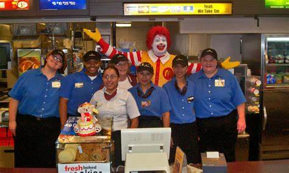

ABOUT
HISTORY
The history of McDonald's Corporation, an American fast-food chain that is one of the largest in the world. It covers how it was started by two brothers in San Bernardino, California and later bought out by Ray Kroc who became a franchise agent for them.
COMPANY'S VALUES
The backbone of our brand is, and always has been, a commitment to a set of core values, that define who we are and how we run our business as well as our restaurants.
When we live our values every day and use them to make decisions-big and small-we define McDonald’s as a brand our people, and the people we serve, can trust.
MISSION
McDonald’s mission statement is “to be our customers’ favorite place and way to eat and drink.
VISSION
Their vision statement is “to move with velocity to drive profitable growth and become an even better McDonald’s, serving more customers delicious food each day around the world.”
PHOTO OF THE COMPANY AND STAFF

back